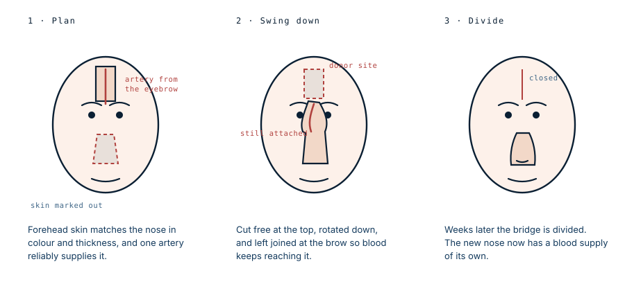

He was a face transplant candidate. His surgeon rebuilt him instead.
A 34-year-old was referred to one of the world's leading face transplant programmes seven months after a devastating facial injury. He had lost his nose, the front of his tongue, his palate, his upper jaw and most of his lower jaw. The surgeon who assessed him performs face transplants, and decided against it — on the strength of one structure that had survived.
The lips decided it
On the face of it he looked like a transplant case. The list of what was gone is close to the worst a face can sustain and still leave someone alive.
But the assessment turned on what remained. Most of both the upper and lower lip were still there. They were severely scarred and tethered down, so they did not work — but the tissue existed. And the surgical team judged that enough of the lip subunit was present to rebuild the oral sphincter, the ring of muscle that lets a mouth close and hold itself shut.
That single judgement decided the whole treatment. Oral competence — being able to seal your lips — is what lets a person eat without food falling out, speak clearly, and not drool. It is also the thing conventional surgery is worst at building from nothing. A nose can be constructed. A jaw can be constructed. Lips that close cannot really be constructed from tissue borrowed elsewhere, which is why lip loss is one of the strongest arguments for a transplant.
He had not lost them. So the argument for a transplant fell away, and the case became a reconstruction problem instead.
Why the criteria matter at all
Face transplantation has existed since 2005 and produces good results in the most extreme defects. What the field still lacks is agreed criteria: there is no consensus on precisely who should receive one, which means the decision rests on the judgement of individual teams.
This case was published to make one team's reasoning explicit — by a group that performs face transplants and chose not to here.
What was rebuilt, and from where
The reconstruction ran in planned stages over years, each building on the last. Almost every part of his face was rebuilt from somewhere else on his own body.
The lower jaw, from his leg. The first operation used computerised surgical planning — the fibula cut to a plan worked out on a 3D model beforehand, so the segments meet at the right angles — and a free fibula flap carrying skin paddles both inside and outside the mouth. The flap's vessels were joined to an artery and vein in his neck. At the same operation the tongue, floor of mouth and lower lip were rearranged to release the scarring.
The upper jaw, from the other leg, six months later. A second free fibula flap, joined to the facial artery and vein on the right. This stage also closed the abnormal channels that had formed between his mouth, nose and sinus, and involved cutting and repositioning the remaining maxilla.
The lining of the nose, from his forearm. A flap from the ulnar side of the forearm, joined to vessels at the temple, was used to rebuild the inside of the nose. This step is easy to overlook. A nose is not a surface: it needs an inner lining, a rigid framework and an outer cover, and without lining the whole thing collapses inward.
The framework, from his ribs. Cartilage taken from the junction between rib and breastbone was carved and grafted to support the bridge, the sidewalls, and the tip. Rib cartilage is the standard material for this because it is strong, plentiful and the patient's own.
Extra skin, grown in place. A tissue expander was inserted under the forehead and inflated over weeks, so the body would produce more skin than it started with, ready for the final stage.
The lip, rotated. The upper lip was rotated and advanced to correct what surgeons call a whistle deformity — a notch in the middle of the lip that leaves a permanent gap, so the mouth cannot seal. Hair-bearing chin skin was advanced upward at the same time, which is why he has a beard in the later photographs.
The outside of the nose, from his forehead. Finally the expanded forehead flap was brought down to resurface the nose.
Teeth, last. Implants were anchored into the transplanted fibula bone in both jaws, and a full set of prosthetic teeth was fitted. This is the step that turns a rebuilt jaw into a working one.
The forehead flap
This last step is worth explaining, because it is the oldest operation in the article and still the best answer to the problem.

Forehead skin is the closest match to nasal skin anyone has: the same colour, similar thickness, and a reliable artery running up from the inner eyebrow that will keep a long strip of it alive.
So the strip is marked over that artery, cut free at the top, and swung down over the nose — while deliberately staying attached at the brow, because that bridge carries the blood. The patient then lives with the connecting bridge across the middle of the face for weeks while the transferred skin grows its own supply from the surrounding tissue. Only then is the bridge divided.
That waiting period is the reason this operation is measured in stages rather than hours, and it is why reconstruction takes months where a transplant takes a day.
The seven months cost him something
There is a second lesson in the paper, and it concerns timing rather than technique.
The senior author's stated preference in high-energy facial injury is to debride and reconstruct early. Cutting away dead tissue quickly limits the inflammation and the scarring that follow, reduces the risk of infection destroying tissue that could otherwise have been used, and stops the remaining soft tissue contracting into positions that are hard to undo. These patients also tend to be young and otherwise healthy, so they tolerate major surgery well.
This man arrived seven months after his injury. By then the benefits of early intervention were gone: the scarring had set, and the tissue had tightened into the state described on assessment as tethered.
That is why he was reconstructed in stages rather than in fewer, larger operations. The paper is explicit that had he presented acutely, early microvascular reconstruction of both jaws would have been considered instead. The delay did not cost him the result. It cost him operations, and years.
What the trade actually was
A transplant would have given him a face in one operation, with better movement and better proportions than staged reconstruction can achieve. In exchange he would take immunosuppressive drugs for the rest of his life, with the infection risk, cancer risk and kidney damage that follow. He was 34 — a long time to be immunosuppressed for a condition that would not kill him.
Reconstruction offered the reverse: many operations over years, an imperfect result, and no drugs afterwards. Given that his lips were salvageable, the team judged the second bargain better.
The comparison worth making
Set this beside the case of Richard Norris, who had more than twenty reconstructive operations including two free fibula flaps — the same technique used here — and still spent fifteen years wearing a mask in public before receiving a transplant.
Two patients, overlapping techniques, opposite conclusions. The difference was not the surgery and not the severity — this man's losses were catastrophic by any measure. It was that Norris had lost his lips and this patient had not. Everything else on the list could be rebuilt from a leg, a forearm, a rib and a forehead. Lips could not.
That is what a transplant assessment is actually for: not deciding whether someone deserves a new face, but establishing whether their own tissue can still be made to do the job.
What this case teaches
A team that performs face transplants assessed a referred candidate with catastrophic facial loss and declined, because most of both lips had survived. That one structure decided it: nose, jaws, palate and nasal lining can all be rebuilt from elsewhere on the body, and lips that close cannot. The rest of the case is a demonstration of how far conventional surgery reaches when the right tissue remains — and a reminder, in the seven-month delay, that scarring which sets before anyone operates cannot simply be undone later.